| .calendar-cell |
Class selectors |
Matches elements based on the contents of their class attribute. For selecting elements having calendar-cell as the value of the class attribute, a . needs to be prepended. |
 |
| #job-title |
ID Selectors |
Matches elements based on the contents of their id attribute. The values of id attribute should be unique in the entire DOM. For selecting the element having job-title as the value of the id attribute, a # needs to be prepended. |
 |
| p |
Type Selectors |
Used to match all elements of a given type or tag name. |
 |
| h1, h2 {} |
Group Selectors |
Match multiple selectors to the same CSS rule, using a comma-separated list. In this example, the text for both h1 and h2 is set to red. |
 |
| div p |
Descendant Selector |
Used to match elements that are descended from another matched selector. They are denoted by a single space between each selector and the descended selector. All matching elements are selected regardless of the nesting level in the HTML. |
 |
| h1#header {} |
Selector Specificity |
Specificity is a ranking system that is used when there are multiple conflicting property values that point to the same element. When determining which rule to apply, the selector with the highest specificity wins out. The most specific selector type is the ID selector, followed by class selectors, followed by type selectors. In this example, only color: blue will be implemented as it has an ID selector whereas color: red has a type selector. |
 |
color: blue;
text-decoration: underline; |
Link Color & Text Decoration |
This CSS code makes your link(s) blue and underlined |
 |
a {
color: blue;
}
a:hover {
color: orange;
}
|
Changing color of link anchor text when hovered over |
To change the color of link anchor from blue to orange (example) when a user hovers over it.
P.S : Two separate selectors, but work together. |
 |
a {
cursor: pointer;
}
| Cursor Pointer |
In addition to any style changes when hovering over a link, the user's cursor should change from the default appearance to a pointing hand |
 |
:link
:visited
:hover
:active |
Link State Ordering |
The ordering of link state pseudo-class rules is important to reveal the proper information. When a user hovers and then clicks a link, those styles should always override the styling surrounding a user's history with the link.
(unvisited :link and :visited)
This ordering will ensure that the rules cascade properly and the user can receive the most applicable visual feedback about the state of the link.
|
 |
button {
height: 50px;
width: 200px;
cursor: pointer;
font-weight: 600;
font-size: 15px;
} |
Generic Button Design |
This is the CSS code for a generic button design. Feel free to play with it and adapt it to your own style and needs. |
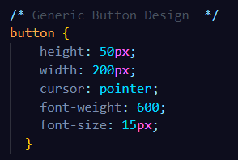 |
.content {
width: 100%;
display: flex;
flex-direction: column;
align-items: center;
justify-content: space-around;
height: 400px;
font-family: 'Roboto', sans-serif;
} |
Generic Button Design (Spatial Disposition) |
This block of CSS code is to set a generic spatial disposition for a button so that it fits normaly with others |
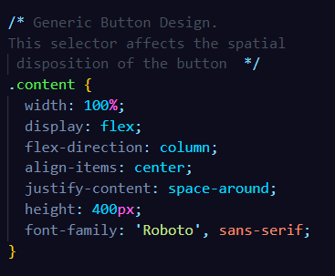 |
.skeuomorphic {
border: 2px solid #0c960c;
border-radius: 5px;
color: #F8F8F8;
box-shadow: 0px 2px 2px rgba(0, 0, 0, 0.2), 0px -2px 2px rgba(255, 255, 255, 0.5) inset, 0 2px 2px rgba(255, 255, 255, 0.8) inset;
background: linear-gradient(#1D1, #0ebc0e);
text-shadow: 0 -2px #0c960c;
}
|
Skeuomorphic Button |
CSS Class Selector block of code for a Skeuomorphic Button Design |
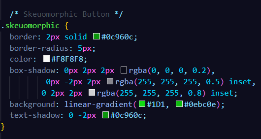 |
.skeuomorphic:hover {
box-shadow: 0px 2px 2px rgba(0, 0, 0, 0.1), 0px -2px 2px rgba(255, 255, 255, 0.25) inset, 0 2px 2px rgba(255, 255, 255, 0.4) inset;
background: #0ebc0e;
background: linear-gradient(#0ebc0e, #0c960c);
border-color: #064f06;
} |
Skeuomorphic Hover Design |
CSS Class Selector block of code to design the hover behavior of our skeuomorphic button |
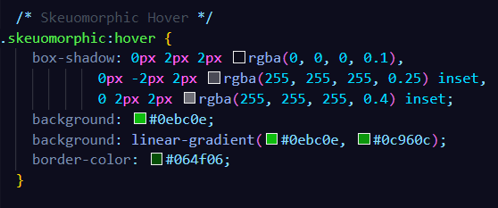 |
.skeuomorphic:active {
margin-top: 2px;
margin-bottom: -2px;
box-shadow: 0px 2px 2px rgba(63, 63, 63, 0.1), 0px -2px 2px rgba(255, 255, 255, 0.25) inset, 0 2px 2px rgba(255, 255, 255, 0.4) inset;
background: #0c960c;
background: linear-gradient(#0c960c, #0ebc0e);
} |
Skeuomorphic Active Button Design |
CSS Class Selector block of code to design the active behavior of our skeuomorphic button |
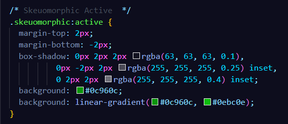 |
.flat {
background-color: #1D1;
color: #fff;
border: 2px solid #12dd23;
border-radius: 10px;
} |
Flat Button Design |
CSS Class Selector block of code to design a Flat Button |
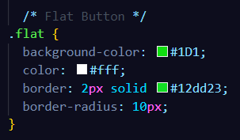 |
.flat:hover {
background-color: #0c960c;
transition: background-color .15s, font-size .15s;
font-size: 18px;
} |
Flat Hover Button Design |
CSS Class Selector block of code to design the hover state of a flat button |
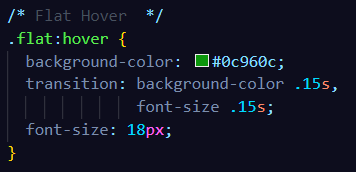 |
.flat:active {
border-color: #fff;
} |
Flat Active Button Design |
CSS Class Selector block of code to design the active state of a flat button |
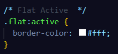 |
button {
padding: 5px;
border: 1px solid black;
border-radius: 5px;
text-decoration: none;
box-shadow: 0px 5px;
}
button:hover {
cursor: pointer;
}
button:active {
margin-top: 5px;
color: black;
box-shadow: 0px 0px;
} |
3-D Bare Minimum Button |
If using CSS rules, the use of hover and/or active states is important in order to model interaction with a real button. For example, to implement a bare minimum 3-D button design, the following CSS ruleset could be used |
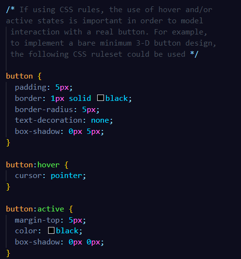 |
| Title="Insert text here" |
Tooltip Attribute (HTML) |
In an HTML file, you can add a tooltip attribute or a little bubble message in a link or button so that when hovered on it shows a message or at least let's the user know that it's clickable |
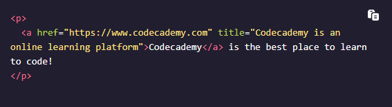 |
p {
width: 300px;
padding: 20px;
border: 2px solid black;
background-color: lightgray;
text-align: center;
border-radius: 10px;
box-shadow: 3px 3px 10px rgba(0, 0, 0, 0.2);
} |
P in a box |
To place a p element inside a box using CSS |
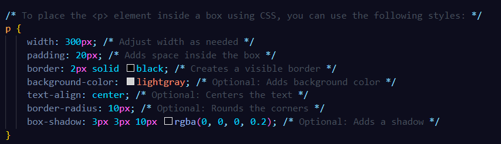 |
body {
background-image: url('your-image.jpg');
background-size: cover;
background-position: center;
background-repeat: no-repeat;
background-attachment: fixed;
} |
Background Image Optimization |
To optimize your background image in every way possible |
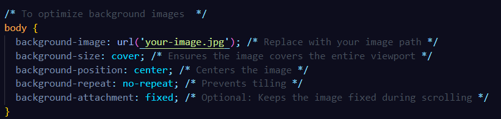 |